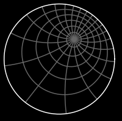

Mathematics 552
Applied Complex Variables
12:00pm-12:50pm MWF, online via Blackboard.
- Instructor:
- Ralph Howard
- Office: LC 304
- Phone: 777-7471 I will not be in the office during the pandemic,
so the best way to get in touch with me is by e-mail.
- E-mail: howard@math.sc.edu
- Office Hours: TTh 2:30pm-3:30pm and
by appointment.
- Syllabus. It contains the basic information about prerequisites, grading, test dates, the text and so forth.
- Texts:
LaTeX basics:
LaTeX is a program for typesetting mathematics which is the standard
for submitting papers to mathematics journals. Since you will be submitting
homework and tests as pdf documents via Blackboard, it may be
worth time to learn to use LaTeX. The link just given (based
on a tutorial written by
Maria Girardi) gives the basics of using LaTeX
and links to the website Overleaf
which has a free online editor for LaTeX.
-
- Previous Math 552 Classes I have taught:
-
-
- Tests:
-
- Homework:
Homework 1
-
-
Home